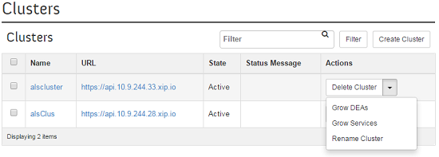
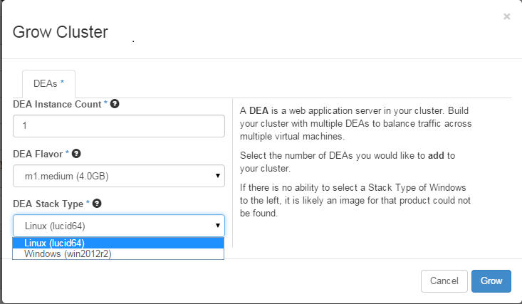
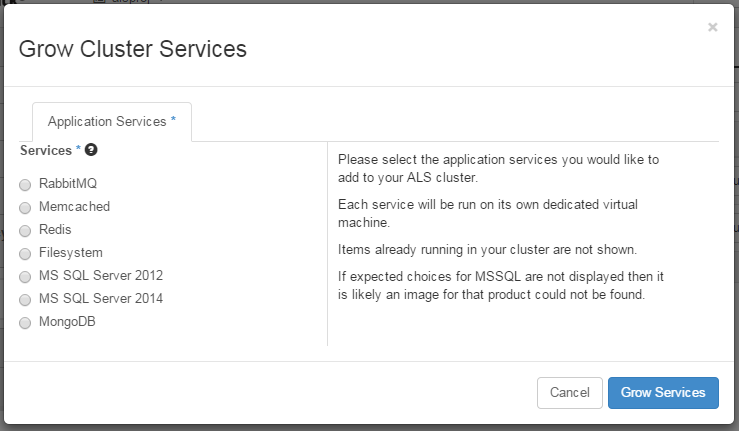
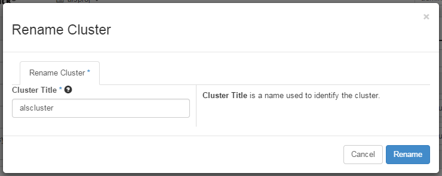

Windows, .NET, SQL Server, and IIS are either registered trademarks or trademarks of Microsoft Corporation in the United States and/or other countries.
Follow these instructions to use the Horizon console to grow your clusters by adding more DEA nodes or services. These instructions are intended for installations of the Helion Development Platform running on Helion OpenStack® version 1.1.1 or later.
Note that Windows DEA nodes and SQL Server services will not appear in the Horizon interface until you upload the appropriate images into Glance.
After creating a cluster, go to the Clusters page. [Project tab >
expand Application Lifecycle Service > Clusters] Click on the
Actions down arrow to display the options and select the desired
option.

Click on Grow DEAs, fill out the details, and then click Grow. This
will create the specified number of DEAs of the selected type and attach them to the
cluster.

Check the check box to select the services and then click Grow Services. This
will create the selected service nodes and attach them to the
cluster.

Click Rename Cluster, enter the new name, and then click Rename. Note that this
renames the cluster title, but does not affect the cluster prefix.
